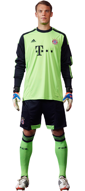

Neuer
Manuel Neuer es un futbolista alemán que juega en la posición de portero. Nació el 27 de marzo de 1986 en Gelsenkirchen (Alemania).
Se formó en las catergorías inferiores del Schalke 04. Su manera de juego fue destacada por el entrenador principal y así el futbolista logró participar en casi todos los partidos del equipo juvenil desde 1992 hasta 2005.
En 2005 Neuer firmó el contrato con el Schalke 04 y empezó a jugar en el equipo de la Bundesliga. A pesar de que no había participado en los partidos profesionales pronto logró ingresar en el equipo principal. Participó en casi cada partido y ayudó al equipo a llegar hasta la Eurocopa y la Liga de Campeones de la UEFA. De 2006 hasta 2011 Neuer fue el portero principal del equipo y participó en 156 partidos.
Su juego estable y la participación en la Selección de fútbol de Alemania le convirtió en el primer portero del Bayern Múnich. El futbolista alemán quiería desarrollarse en su carrera y así decidió a unirse con el Bayern, el otro club de la Bundesliga que siempre participaba y ganaba en la Liga de Campeones. En verano de 2011 Neuer firmó el contrato por 5 años, lo que le costó al club 18 millones de euros con la opción de 7 millones de euros extra en caso de la actuación exitosa del jugador en su nuevo equipo. Con el Bayern Múnich llegó a la fase final de la Liga de Campeones de la UEFA y ocupó el segundo puesto. En 2012 su equipo se hizo subcampeón de la Supercopa de Alemania.
De 2006 hasta 2009 Manuel participó en 20 partidos con la Selección de fútbol sub-21 de Alemania. Antes fue eligido a las Seleciones sub-18, sub-19 y sub-20. A partir de 2009 Neuer se convirtió en el portero de la Selección absoluta de Alemania, donde logró tomar parte en 36 partidos. En 2014, Neuer ganó el campeonato del mundo. En Enero de 2015, quedó entre los tres finalistas para el Balón de oro junto a Messi y Cristiano.
